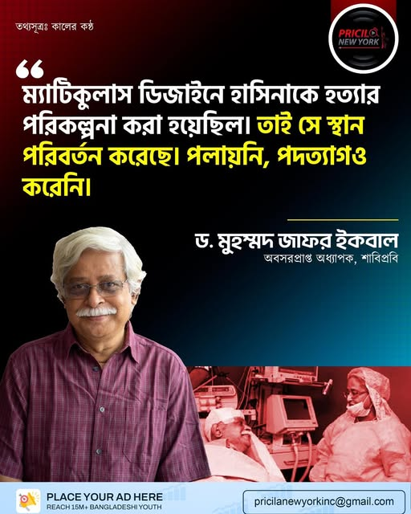
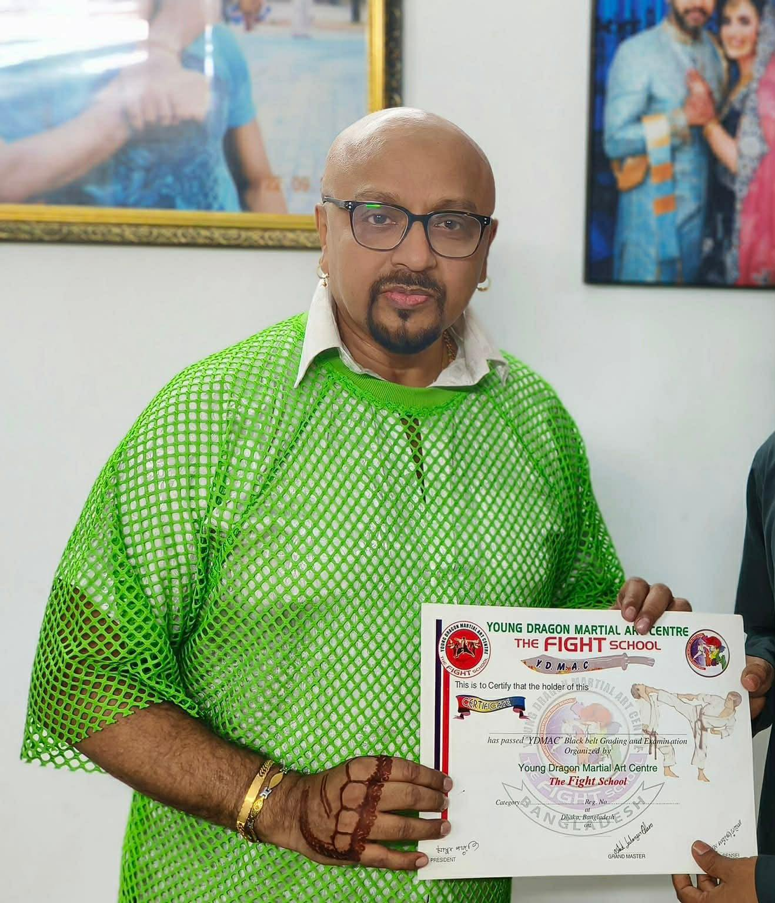
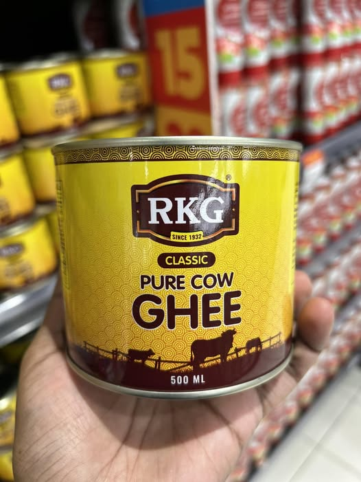
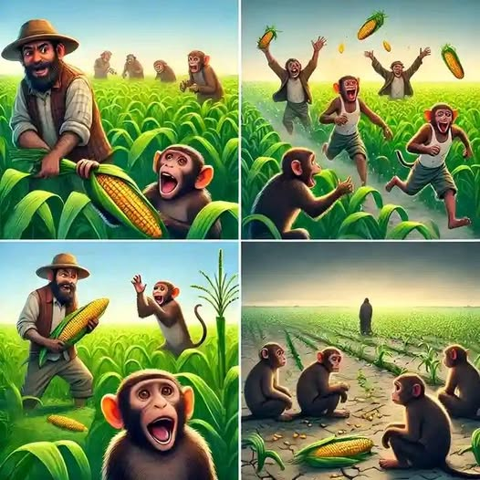

আজকের লিড নিউজ
রং বেরঙের তামাশা
কাতার এর আমিরের মেয়ে হার্নিয়া আমিরের সাথে দেখা করতে না পেরে মাথা খারাপ হয়ে গেছে কোঁদাল যোদ্ধা মুজাই ওরফে মীর জাফর এক-বাল এর

খেলার খবর
বিসিবির নির্বাচন থেকে সরে দাঁড়ানোতে তামিম ইকবালের পোশাকে মানুষের মল
লাগিয়ে দিলেন ঢাকা ছিটির অনির্বাচিত মেথর ইশ:রাখ হোসেন।
বিনোদন রঙ্গ
ডেঙ্গু প্রতিরোধে সরকারি অব্যবস্থাপনার প্রতিবাদে মশারি গায়ে মশার বিরুদ্ধে মহানায়ক বুরেলের যুদ্ধ ঘোষণা।
আজাইরা খবর
একটা আনকমেন জিনিসের সাথে পরিচয় করিয়ে দিব। এটা একটা খাবার জিনিস। অনেকেই বলে, এটা কুত্তার পেটে হজম হয়না। তবে এখানে কুত্তা বলতে আসলে dog কে বুঝায় নাই। এখানে বড়লোক ছোটলোক বুঝানো হয়েছে। যাই হোক, ঘি হচ্ছে একধরণের হলুদ রঙের ক্রিম। এটা গরুর ভিতর থেকে বাইর হয়। কিভাবে বাইর হয় তা জানিনা। তবে এখানে কোনো একটা কিন্তু আছে। সেই কিন্তুটা কি, তা আমি জানিনা। হতে পারে গরুর ওলানে অনেকগুলো সিস্টেম। হয়ত একটা সিস্টেম থেকে দুধ আসে। আরেকটা থেকে ঘি আসে। কি জানি, আমি ঠিক বুঝতেছিনা। মাথাটা আউলিয়ে গেছে।

জীবনমুখী গল্প
বান্দর ও কৃষক
প্রতিদিন, একদল বানর কৃষকের ক্ষেত থেকে ভুট্টা চুরি করত। কৃষক তাদের কর্মকাণ্ডে রেগে গিয়ে তাদের দেখলেই লাঠি দিয়ে তাড়িয়ে দিত। ফলস্বরূপ, বানররা আর যতটা ভুট্টা খেতে চাইত ততটা খেতে পারত না। একদিন, অপ্রত্যাশিতভাবে, কৃষক মারা গেল। বানররা যখন খবরটি শুনতে পেল, তখন তারা আনন্দের সাথে উদযাপন করল, বিশ্বাস করল যে তাদের সমস্যা শেষ হয়ে গেছে। যাইহোক, পরের বছর, ক্ষেতে কোনও ভুট্টা জন্মেনি। ফসল চাষ করার জন্য কেউ না থাকায়, জমি অনুর্বর থেকে গেল। শীঘ্রই, ক্ষুধার্ত বানররা একটি কঠোর সত্য বুঝতে পারল - তারা যাকে তাদের শত্রু হিসাবে দেখেছিল সে ছিল সেই ব্যক্তি যিনি সারা জীবন তাদের খাবার সরবরাহ করে আসছিলেন। গল্পের নীতি: আমরা প্রায়শই মানুষ এবং জিনিসগুলিকে হালকাভাবে নিই, তাদের আসল মূল্য চিনতে ব্যর্থ হই। কিন্তু যখন তারা চলে যায়, তখন আমরা অবশেষে তাদের গুরুত্ব বুঝতে পারি। অনেক দেরি হওয়ার আগেই আপনার যা আছে তা উপলব্ধি করুন।
